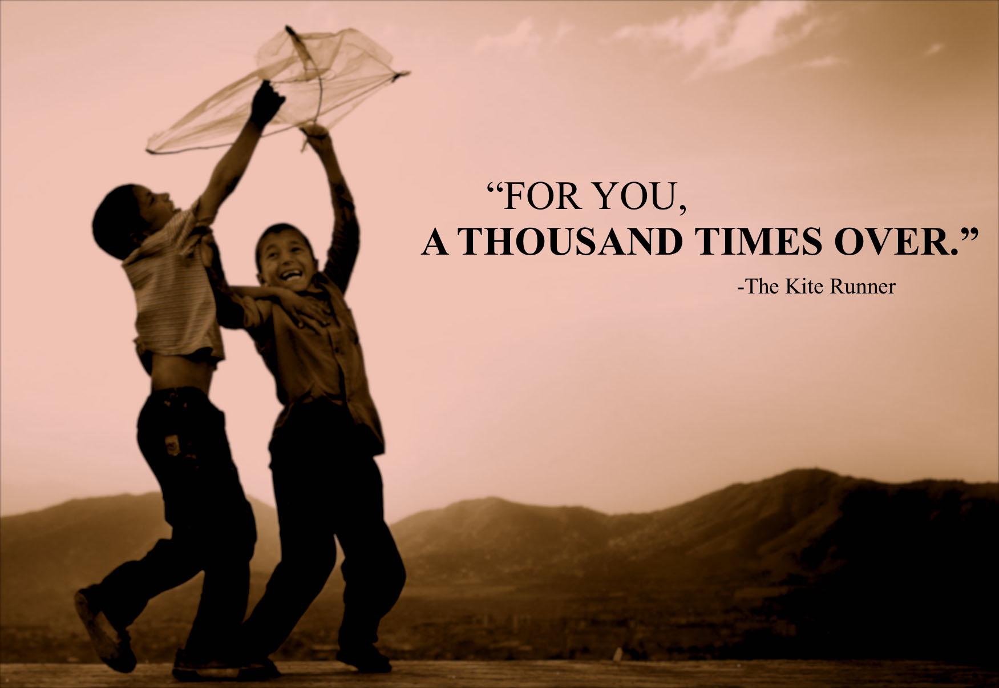
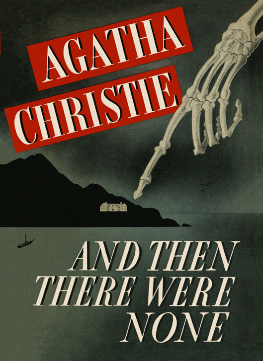
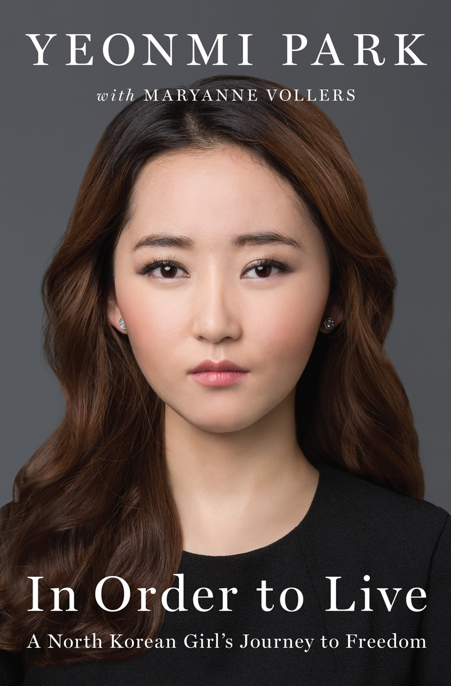

Incep seria de review-uri cu cartea mea preferata. Scrisa de Khaled Hosseini, aceasta te trimite in Afghanistan in mijlocul anilor '70 si te pune fata in fata cu tumultul acelor zile: de la caderea monarhiei si invazia Sovietica, pana la aparitia Talibanilor.
Intr-o lume atat de ostila, povestea a doi baieti ti se asterne in fata ochilor. Iti spun de acum, ca unele intamplari te vor coplesi. Vei empatiza. Vei realiza ca tot ceea ce citesti este o picatura intr-un pahar cu apa, o poveste singulara. Te vei intreba de impactul la o scara mai mare. Te vei intrista, te va zgudui. Daca esti ca mine, poate vei si plange.
Mi te adresez tie, cititorule, aceasta este lumea in care traim, si este de datoria ta sa o cunosti.

Titlul review-ului acesta ar fi trebuit sa fie "Orice de Agatha Christie", caci eu una termin de citit orice carte scrisa de Agatha Christie in cateva ore.
Toata opera ei este plina de ingeniozitate, creaza un suspans grandios, iar curiozitatea ma impiedica sa las cartea din mana. Eu una afirm ca oricat as incerca, niciodata nu pot deslusi taina singura. Fiecare pagina ascunde indicii, misterul se adanceste, si totusi nu am niciodata dreptate! Orice banuiala piere odata cu maiestria cartii.
Agatha Christie a fost o femeie de geniu, clar!

Aici vorbim despre o biografie, ce cu siguranta intrece orice film. Yeonmi Park a evadat din Coreea de Nord la o varsta frageda si si-a asternut pe hartie intreaga sa "aventura". Drumul sau catre libertate a fost mai mult un cosmar, insa. Vorbim aici despre foamete, boala, frig, abuz, traficare.
In cazul in care credeai ca stii ceva despre Coreea de Nord, iti spun verde-n fata ca nu stii destul. Biografia acestei fete te va cutremura si vei avea parte de inca o trezire la realitate.
Aceasta este lumea si acestea sunt vremurile in care tu si eu traim. Citeste, informeaza-te si poate impreuna putem schimba ceva!
Fiti pe faza, caci va urma
"Razboiul nu are chip de femeie" de Svetlana Aleksievici